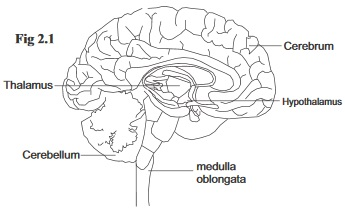

New Senior School Biology Practical Activity & Work Book 3
Chapter
2
NERVOUS COORDINATION
Notable Concepts
Nervous system and its parts.
The neurons.
Transmission of nerve impulses.
Actions and behaviour.
Background Information
Activities of living organisms especially the higher ones require proper co-ordination of the various parts in line with the internal and external environments of the organism. This role of co-ordination is performed by The nervous and endocrine systems.
The nervous system is the system of the body that is involved with the reception, transmission, integration and correlation of impulse through nerve cells.
PARTS OF THE NERVOUS SYSTEM OF VETEBRATES
The nervous system of vertebrates is made up of two major parts:
The central nervous system and
The peripheral nervous system.
The Central Nervous System: This consists of The brain and Spinal cord.
fig2.1: The Brain

Both the brain an the spinal cord are centrally located in the body. They are covered by three protective membranes called Meninges.The outermost membrane is called dura mater,the innermost membrane is called pia mater,in between is the arachnoid's mater. Between the piamater and the arachnoid's mater is the cerebro spinal fluid.
This fuild cushions the brain and the spinal cord against shock and also helps to remove waste materials from the brain (being linked to capillary networks).
Cerebro spinal fluid is also present at the spinal canal and ventriclesin the brain.
The Brain
The brain can be divided into three regions: The fore brain, mid brain and hindbrain. The outer portion of the brain tissues is grey while the inner portion is white. The human brain is large and contains about 12billion neurons. It is the first tissues of the body that will first respond to low oxygen and glucose level in the blood.
Parts of the brain
Function
(1) The fore brain
(i). The cerebrum: Consists of the left and right Cerebral hemispheres connected together by corpus callosum. Each hemisphere has four indistinct lobes. The cerebral cortex at the surface is the most active part of the cerebrum.
Controls voluntary actions such as intelligience, memory, imagination and creativity. This also receive information from the sense organs.
(ii). The Thalamus:
An ovoid structure which acts as an important relay centre.
Receiving information from other parts of the central nervous system (CNS), integrating and passing them to the concerned region at the cerebral cortex. Thalamus also arouse brain activity, it prevents sensory overload by screening stimuli before they get to the brain.
(iii). Hypothalamus
It lies beneath the thalamus.Hypothalamus is the main coordinating center for the authonomic nervous system.
It controls sensation that are involved in homeotasis such as hunger and thirst, temperature, water balance. It also controls blood pressure and release of many hormones.
The Mid brain
Connects the hind brain with the fore brain
Controls certain reflexes invloved withhearing and sight.
The Hind Brain
(i) The cerebellum: consists of two cerebellar hemospheres and a central portion linking them. (ii) Pons varolii: A band of fibre which connects the two cellebellar hemispheres. (iii). Medulla oblongata.
The Cerebellum controls body posture and muscular movements. It helps the body to maintain balance. Medulla Oblongata controls many involuntary actions such as Breathing movement, heart beat and digestion, construction and dilation of blood vessels.
fig2.2.
The mammalian spinal cord and spinal nerves in relation to the vertebrae columm
(Seen from one side)
The Spinal Cord
The spinal cord runs through the neural canal in the vertebrae. The vertebrae bones protect the cord from injury. The meninges which has three membranes within which the spinal cord is enveloped also gives it support and protection within. A narrow canal called spinal canal, runs through the central of the spinal cord. This canal is filled with cerebrospinal fluid. A transverse section of the spinal cord shows that it has a central grey portion (made up of cell bodies of neurons) and the white outer region (made up of nerve fibre of neurons). The spinal cord controls most reflex actions.
Areflex action is an automatic, unthinking response to a stimules. The spinal cord also acts as a pathway between the spinal nerves and the brain.
The Peripheral Nervous system
The peripheral nervous system consists of two parts: (i) The sensory system (which links the environment with the CNS) (ii) The motor system (Which links the effectors with the CNS). With the exception of the brain and spinal cord, all other parts of the nervous system belong to the peripheral nervous system
The Sensory System
The sensory system consists of sensory receptors and sensory neurons (or afferent neurons). The sensory neurons connect receptors to the central nervous system. They are part of the spinal and cranial nerves.
The Motor System:
The motor system consists of the somatic nervous system and The Autonomic nervous system.
Somatic nervous system: The somatic nervous system consists of motor neurons (efferent neurons) which link the CNS to the skeletal muscle. The motor neurons forms part of the spinal and cranial nerves whose cell bodies are located in the CNS while their nerve fibre extend to the skeletal muscles. The somatic nervous system controls voluntary action involving muscular movement like clapping and certain reflex movements like the knee jerk.
The Autonomic Nervous System: This consists of motor neurons that connect the CNS with glands and involuntary muscles (involuntary muscles are cardiac muscles and smooth muscles). Its consists of network of nerve fibres that extends from the CNS to the ganglia to the effectors.
The autonomic nervous system is made up of two systems: (i) The sympathetic nervous system
(ii) The parasympathetic nervvous system.
The sympathetic have their effects during relaxed periods while parasympathetics has its own effects in emergency and stress
fig2.3:
The neurone is the basic structural and functional unit of the nervous system. They are specialized for transmission of information by electrical impulses. Unlike most cells, they do not posses the ability to regenerate.
Types of Neurones (According to their functions)
i
Sensory neuron which is also called afferent neurone
It picks up information from the external environment from the receptors to the Central Nervous System (CNS).
ii
Motor neurones(efferent neurone)
which carry interpreted information to muscles and glands.
iii
Association neurones which are also referred to as relay neurones.
It connects the pathway of sensory and motor impules in the Central Nervous System (CNS).
Actions and behaviours
Actions: Actions can be referred to as responses to stimuli. It can be grouped into valuntary actions and involuntary actions(reflex actions).
Voluntary actions are action that are thought upon before carrying out. Such action are controlled by thewill and they involve the cerebral cortex of the brain. Examples of such actions are learning, Reasoning, singing etc.Involuntary or Reflex actions are automatics and unthinking actions exhibited without a conscious involvement of the will. Examples of such action are sneezing, Jerking of the lower knee when the knee cap is tapped, blinking to a sudden movement in front of the eyes etc
fig2.4:
Behaviour: The way or manner organism responds to changes in their environment make up their behaviours. Behaviour can be instintive behaviour or innate behaviour which can be inherited. It can also be a learned behaviour which is a non-instinctive behaviour that is developed through use.
General questions
1. Two systems of the body that bring about coordination are
and
2. An electric sensation which is the main mechanism of transferring information along a nerve fibre is called
3. The brain and spinal cord make up the
nervous system.
4. The protective membrane that covers the brain and the spinal cord is called
5. The
in the brain regulates temperature.
6. The
part of the cerebral hemisphere is dominant in most people
7. Most simple reflex actions are controlled by the
8. The most active region of the cerebrum is its outer layer called
9.
fluid cushions the brain against shock and also removes waste materials from the brain.
10. The
is the part of the hind brain that controls involuntary actions such as respiratory movements and heartbeat.
11.
prevents sensory overload in the brain by screening the stimuli coming to the cerebrum.
12. As activities of the somatic nervous system affects skeletal muscles, those of the autonomic nervous system affects
the glands, smooth muscles and cardiac muscles
limbs, skin, and joints
skeletal muscles, ball and socket joint
fig2.5:
13. Caption and label the parts of figure 2.5
14. What are the functions of the part labeled 8 and 5
v.
viii.
15. Across the synaptic gaps, nerve impulses passes by ___________
electrical means
chemical means
biochemical means
16. The central gray portion of the spinal cord consists of
of neurones.
17. During transmission of impulse across the synapses, when an electric impulse reaches the end of the axon, it stimules the
to secrete neurochemicals such as
into synaptic gaps.
18. Which part of the autonomic nervous system have their dominant effects in emergency and stress?
19. The vagus nerve which is a cranial nerve is the main nerve of the
nervous system.
20. __________ is an example of a reflex action
Jerking the lower leg when knee cap is tapped
Smelling the aroma of food
Touching a cold or wam water and keepng the hand there
Expression Exercise
fig2.6
The diagram in fig. 2.6 is a simpler reflex arc action in human, Use it to answer the questions that follow
Label the parts numbered 1 – 5.
Use the diagram to explain how reflexes serve a protective function in human
(c) At what part in the diagram can we find relay neurons
2. Use the table below to differentiate between reflex and voluntary actions.
Reflex Action
Voluntary Action
Also in the table below write three differences between the somatic and the autonomic nervous systems.
Somatic Nervous System
Autonomic Nervous System
(4) Describe the process by which a nerve impulse starts and travels along the neuron
5. How is the resting membrane potential restored after a nerve impulse has passed?
Practical Activities
Make a purchase of a small mammal and use its skull for this activities
Materials required: Scapel or table knife, hand lens. Formaline, Hydrochloric acid, and a small mammal (rat, rabbit or guinea pig).
Procedure:
Place the animal in a formaline for up to three weeks.
Put it in dilute hydrochloric acid for a whole day.
Remove the skin from the head and back of the animal to expose the central nervous system.
Examine the cerebral hemispheres and the tissue separating them.
Observe the sutures of the skull and your teacher can help you to cut through the parietal suture and through to the posterior end of the skull to the neck and expose the whole brain structure.
Observe the inside using hand lens. From your activities and observations. Answer the following questions.
Why was the animal treated with formalin.?
What purpose did hydrochloric acid serve in the prepration of the organism for the experiment?
What colour did you observe at the outer surface of the brain and that of the spinal cord?
What is responsible for the observed colours?
Test of practical work
fig11.2:
i. Identify the diagram above
ii. Nerve poisons also bring about their effects at synapses, write two examples of such poisons.
iii. Why is it that the neurochemical released is quickly destroyed by enzymes?
fig2.8:
Identify the diagram in figure 2.8
2a. Label the major parts of the diagram shown above
(b) Write down the function of I, ii, iii,
SSCE Past Questions on Nervous Coordiantion
Nov 1990 Q5
1. Study the diagram below and use it to answer question 1
(a) Name the part labelled I – V
(b) Which number indicates a part of peripheral nervous system?
Nov 1994 Q4
2. Which part of the brain controls breathing
June 1995 Q2
3. What part of the brain controls temperature regulation in the body